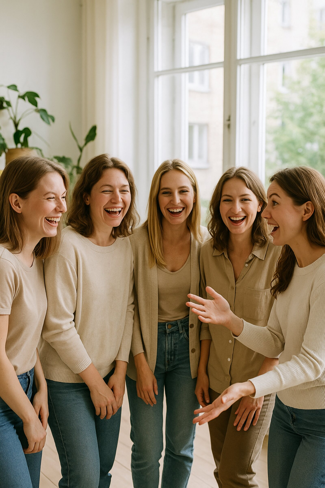

Texte scurte și sincere despre valoarea de sine, relația cu tine, cercul de femei și grija de sine — de la psihologi practicieni.

De ce în cerc se întâmplă ceea ce o conversație obișnuită nu-ți oferă.
Când problema nu e în efort, ci în ruptura de tine.
Cum „a rămâne cu trăirile” ajută să revii la contactul cu tine.
Textele noi apar pe măsură ce avem ceva de spus la obiect. Ca să nu le ratezi — abonează-te pe Instagram →